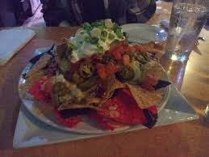

Giant Nachos

A hefty size nachos for the hefty size appetite
Each chip from this massive pile of nachos is about the size of a small piece of pizza. As they should be for the ultimate nacho lover, right?!
This recipe takes more time than the average plate of nachos, but is well worth the effort. It's the perfect snack for a large group!
Ingredients:
- 2 packages of ground pork
- large tottilla chips
- 1/2 cup olive oil
- 6 cups shredded cheddar cheese
- pickled jalapeno peppers
- 1/2 cup of guacamole
- 1/2 cup sour cream
- 1/2 cup crumbled cotija cheese
- 1/2 cup chopped cilantro
- 1/4 cup sliced green onions
Steps:
- Preheat oven to 350 degrees F (175 degrees C). Line 2 baking sheets with parchment paper. Line a jelly roll pan or large cake pan with parchment paper.
- Heat a large skillet over medium-high heat. Cook and stir pork chorizo in the hot skillet until browned and crumbly, about 7 minutes. Transfer to a bowl; place in the refrigerator.
- Stack 5 tortillas. Slice off rounded edges to create large triangles. Repeat with remaining tortillas.
- Place 3 to 5 tortilla triangles in a large bowl. Drizzle some olive oil on top; rub over the triangles with your fingers. Transfer to the prepared baking sheets. Repeat with remaining triangles and olive oil, arranging 6 triangles per baking sheet.
- Bake in the preheated oven until toasted, 7 to 8 minutes. Remove from oven; flip with tongs. Continue baking until second side is golden brown, 7 to 8 minutes more. Transfer to a wire rack to cool. Repeat with remaining triangles.
- Layer baked triangles, chorizo, Cheddar cheese, and jalapeno slices in the prepared jelly roll pan.
- Bake in the preheated oven until Cheddar cheese is melted, 20 to 25 minutes. Top with guacamole, sour cream, cotija cheese, cilantro, and green onions.